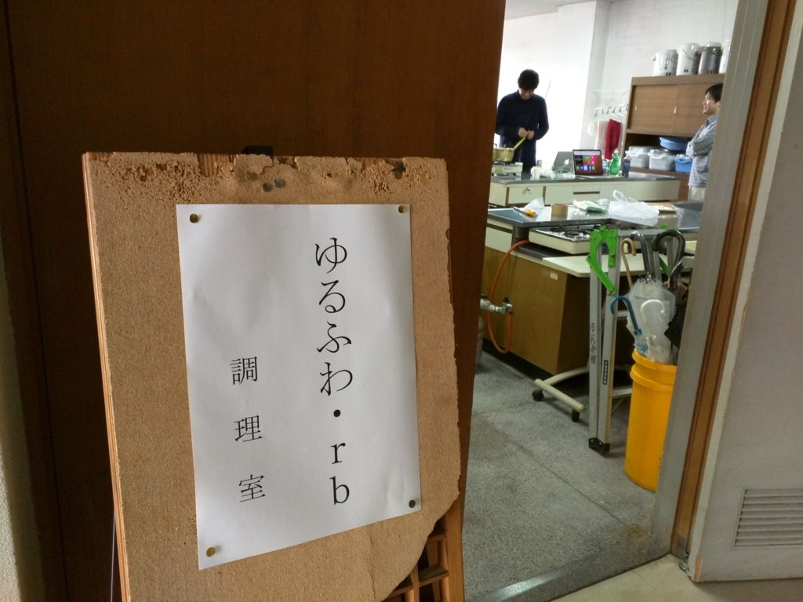
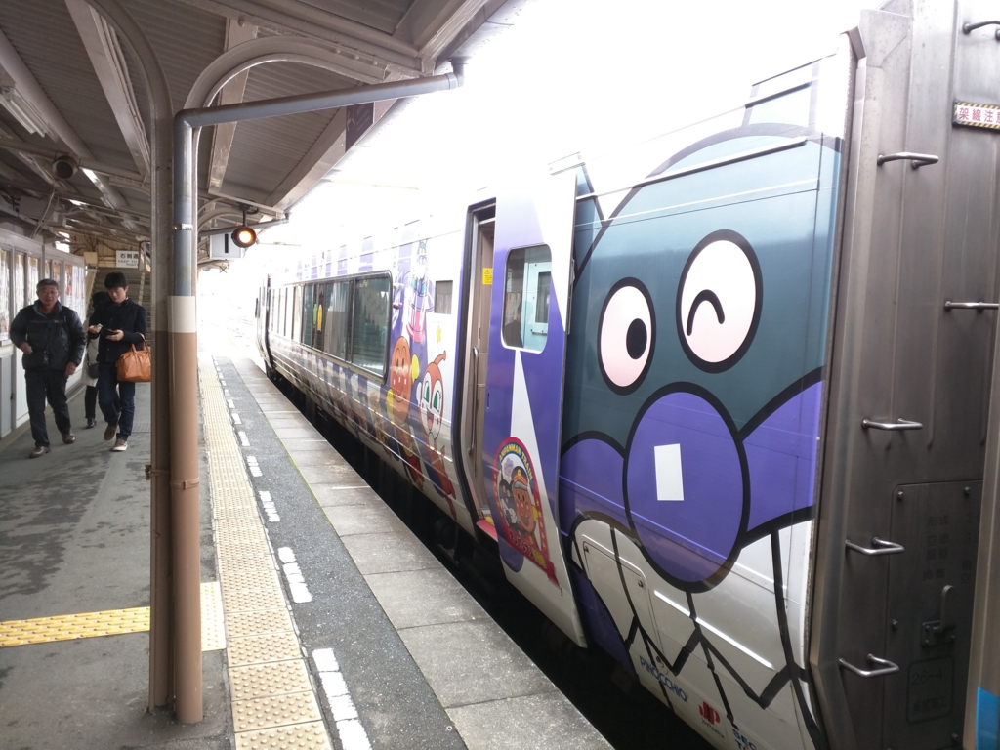
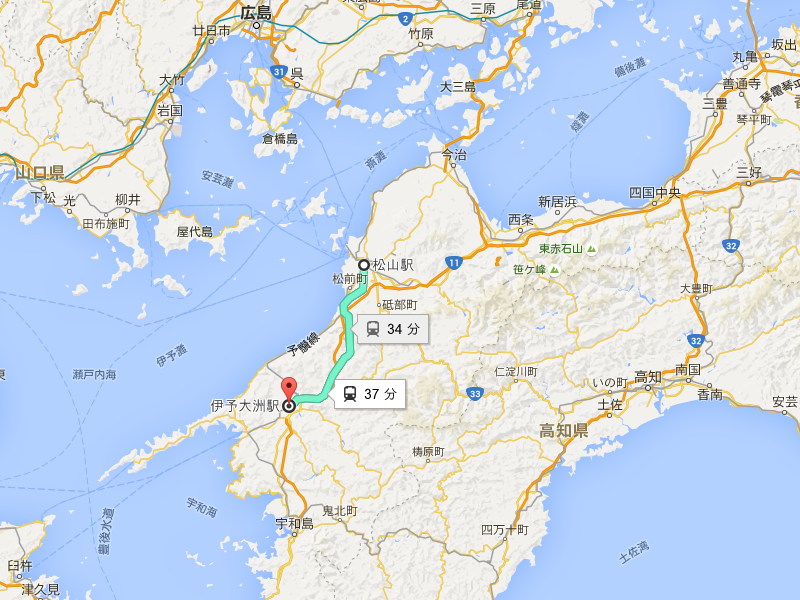
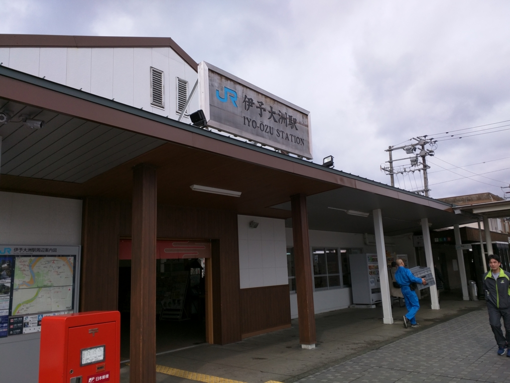
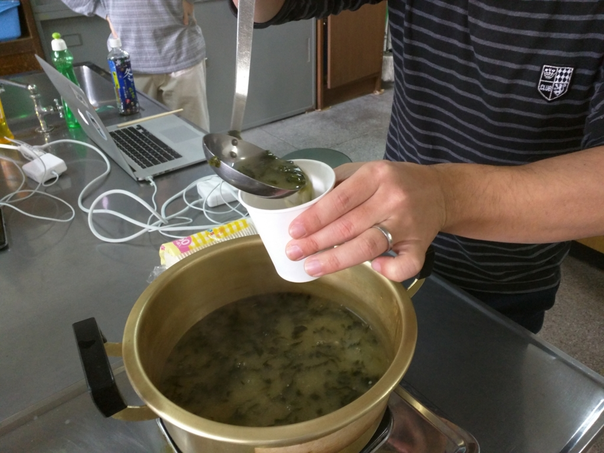
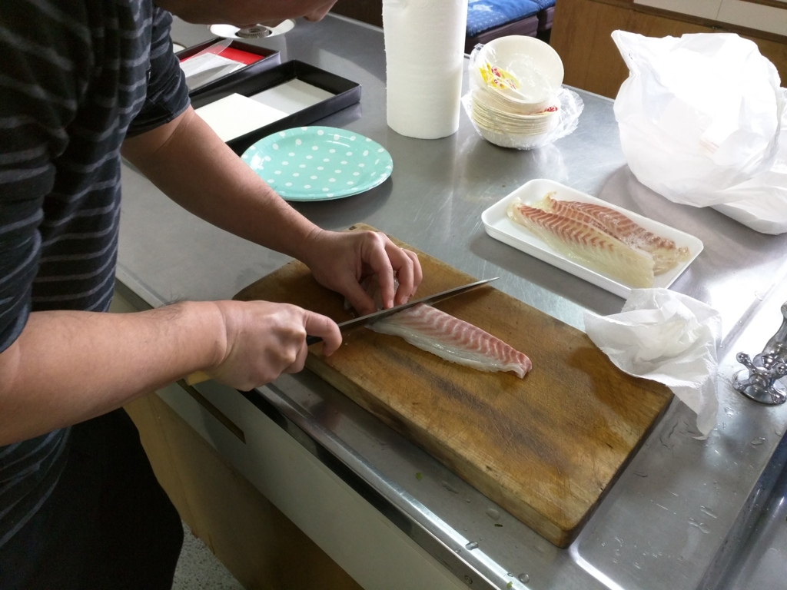
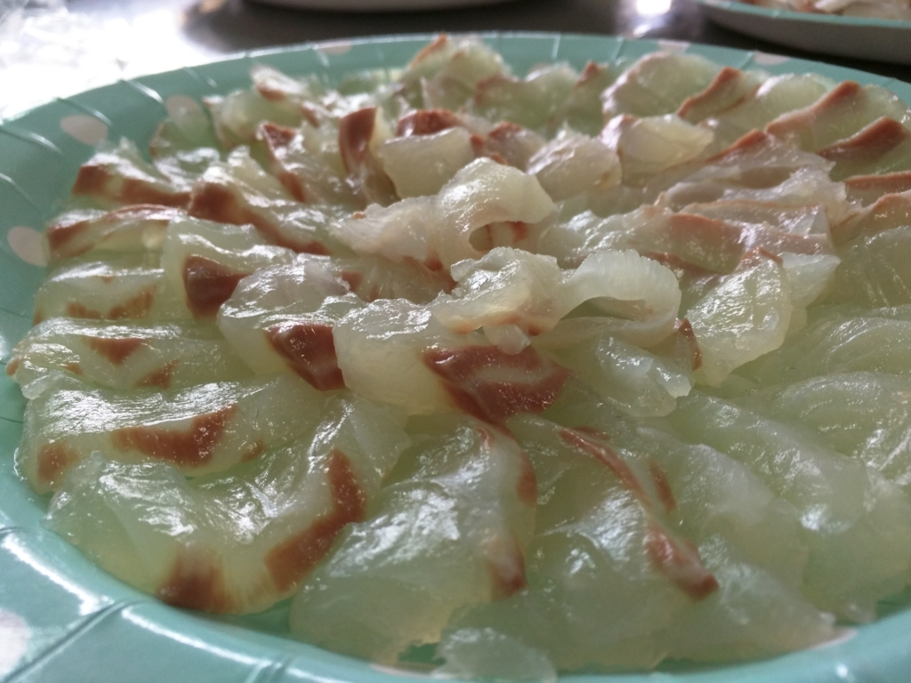
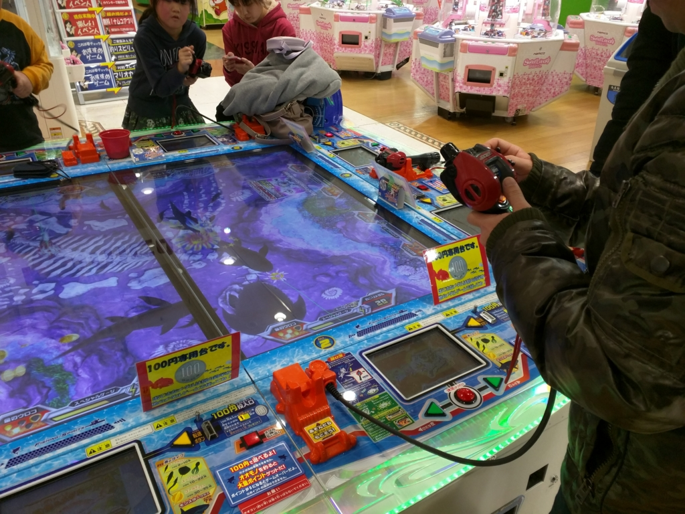
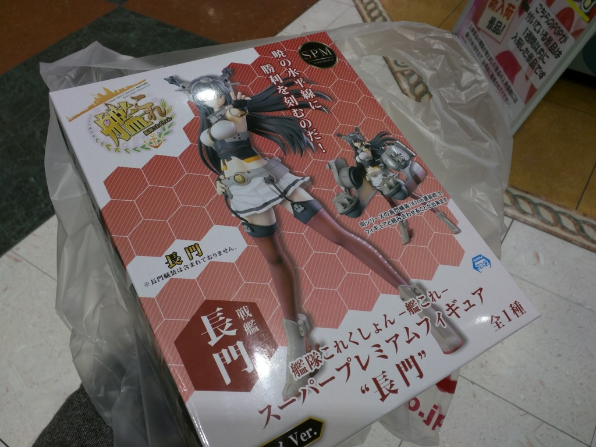
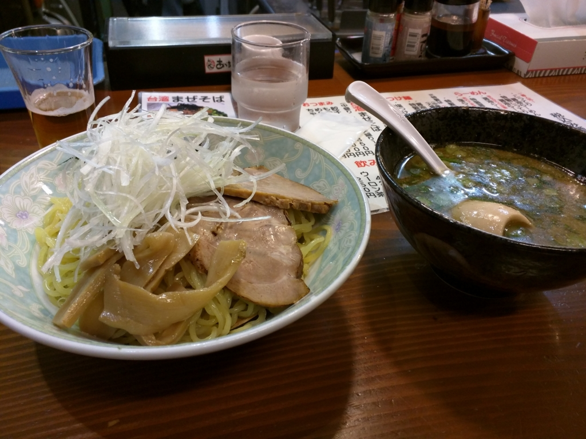

「ゆるふわ.rb in 大洲 〜作ってみよう Slack bot〜」でお刺身食べてきました。
執筆日時：

週末は「ゆるふわ.rb in 大洲 〜作ってみよう Slack bot〜」に参加してきました。
「ゆるふわ.rb」はプログラミング言語 Ruby の勉強会を装ったタダの飲み会です。愛媛県大洲市の公民館みたいなところ（大洲城の下にあります）の調理場で不定期開催されています。

土曜日の朝、11:00ごろ（僕の感覚ではまだ朝です）。JR 松山駅すぐそばの「時計台」という喫茶店で朝ご飯をしたあと、@nakaji と二人でアンパンマン列車に乗るという羞恥プレイに耐えながら、内子線経由で伊予大洲駅を目指します。

特急・宇和海に揺られること30分。伊予大洲駅に到着。大洲城を中心に発展した人口4.4万人ほどの城下町で、「伊予の小京都」と呼ばれることもあるとか。僕がくるのは今回でたぶん3回目。

JR 松山駅もそうですが、伊予大洲駅は街の中心部（城や市役所）からはちょっと離れたところにあります。歩くのがちょっとめんどい。
雨が心配だったのですが、どうやら大丈夫みたい。肱川沿いを歩いていると、大洲城がよく見えました。晴れていたらきれいだったんでしょうけどね！

13:00 前に参加者が全員集合。「ゆるふわ.rb」ではおなじみのウェルカムドリンクがふるまわれます。今回は麦味噌だったかな？ アオサのお味噌汁です。いつも飲んでるお味噌汁よりも、ちょっと口当たりがやわらかい感じ？ 美味しかったです。
ここでとりあえず、おぎのさんによる Slack BOT の作り方の実演。Slack というのは、簡単に言うと BOT を飼うためのチャットルームを提供するサービスです（？）。Ruby Gems と WebHook API で割とサクッと作れるみたい。自分も今度 /homo って入力したら ( ‘д‘⊂彡☆))Д´) ﾊﾟｰﾝ って返ってくるコマンドでも作ってみたいです。

さて、真面目な話はここまで（お勉強は20分ぐらいで終わり！）。あとは各自持ち寄ったお酒とおつまみ、そしてメインの鯛と太刀魚でお刺身＆しゃぶしゃぶをやりました。

鯛はもちろん、久しぶりの太刀魚、めっちゃ美味しかったデス。
あと、川之江で売ってると言ってたかなぁ？ お刺身用に出してもらったお醤油が割とおいしい……自分もほしいかも。今度あっち方面に行ったら仕入れてきたいですね。

調理室を撤収した後は、居酒屋さんの開店までしばしお遊戯。魚釣りゲームでちびっ子たちに惨敗したり――（あいつらめちゃくちゃうめえんだ！！）

クレーンゲームで艦これの戦艦・長門のフィギュアをゲットしたりしました(n*´ω`*n)
大洲駅のそばの居酒屋さんで二次会をして、解散（お疲れ様でした！
松山・新居浜組は特急・宇和海で大洲駅を後にしました。あんまりいいとは言えない宇和海でしたが、みんないい感じに酔っぱらっていたみたいで、爆睡していました。
I'm at 男組 釣天狗 in 松山市, 愛媛県 https://t.co/NA7PZuGvv7 pic.twitter.com/LwBo7wxlSf
— だるやなぎ（アクシズ教信者） (@daruyanagi) 2016, 1月 30もちろん、3次会も。なかなかおいしい＆雰囲気が面白い店でした。久しぶりに @nakaji さんと @ramusara さんとで飲めてよかったデス。

そのあとは、JR 松山駅から松山市駅～大街道まで歩き、しっかり〆のラーメンまで（4次会！）。この辺りで日を跨ぎ、日曜日に突入していた記憶がある。あんまり覚えてないけど。
ただ、せっかく歩いたのに、目当てのラーメン屋は終わってたみたい（残念！）。適当なところに入ったのですが、つけ麺はだしが薄めでイマイチだったかも。ふつうのラーメンにすればよかった。
おわり。